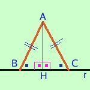
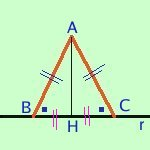
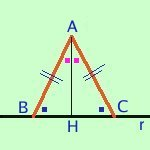

In un triangolo isoscele l'altezza, la mediana e la bisettrice condotte dal vertice opposto alla base sono coincidenti
So che il triangolo e' isoscele e ne considero l'altezza, dimostro che allora e' anche mediana e bisettrice
posso anche prendere per ipotesi che il triangolo e' isoscele e considerarne la mediana
oppure prendere il triangolo isoscele e considerarne la bisettrice
Quindi ho tre possibili dimostrazioni
- So che il triangolo e' isoscele e ne considero l'altezza

Ipotesi
AB=AC ABC=ACB AHB=AHC=angolo retto |
Tesi
BH=HC AHB=AHC |
Dimostrazione:
Dimostriamo prima che e' mediana: essendo AH l'altezza BH e HC sono le proiezioni di due segmenti AB e AC congruenti per ipotesi e quindi sono congruenti BH ed HC (teoremi precedenti sulle proiezioni)
Dimostriamo che e' bisettrice: considero i triangoli
ABH ed AHC essi hanno
AB=AC per ipotesi
BH=HC perche' appena dimostrato
AH in comune
Quindi i due triangoli sono congruenti per il terzo criterio ed in particolare avremo gli angoli AHB ed AHC congruenti fra loro
- So che il triangolo e' isoscele e ne considero la mediana

Ipotesi
AB=AC ABC=ACB AH=HC |
Tesi
BAH=CAH AHB=AHC |
Dimostrazione:
considero i triangoli AHB ed AHC essi hanno:
AB=AC per ipotesi
AH e' in comune
BH=HC sempre per ipotesi
Per il terzo criterio i due triangoli sono congruenti ed in particolare avremo gli angoli BAH=CAH ed anche gli angoli AHB=AHC che quindi saranno retti
- So che il triangolo e' isoscele e ne considero la bisettrice

Ipotesi
AB=AC ABC=ACB AHB=AHC |
Tesi
BAH=CAH AH=HC |
Dimostrazione:
considero i triangoli AHB ed AHC essi hanno:
AB=AC per ipotesi
gli angoli ABC=ACB sempre per ipotesi
gli angoli AHB=AHC ancora per ipotesi
Per il secondo criterio i due triangoli sono congruenti ed in particolare sara' BH=CH ed anche gli angoli AHB=AHC che quindi saranno retti
|